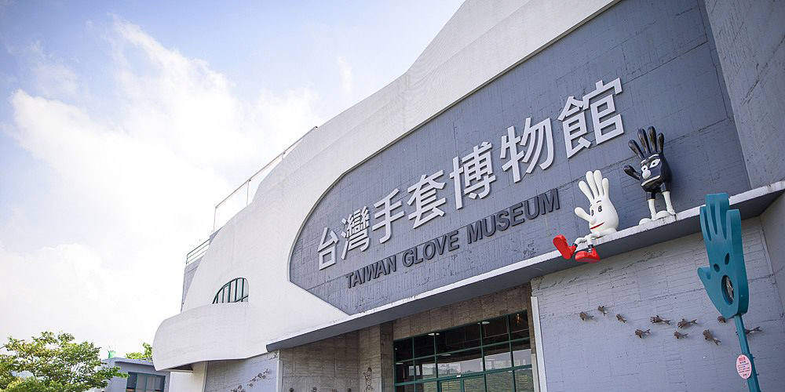
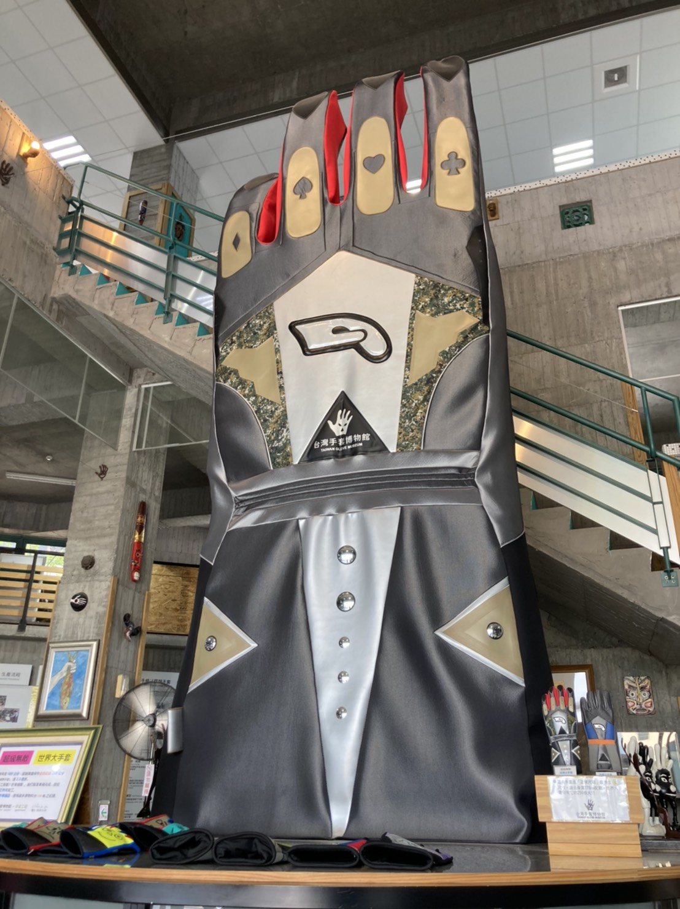

品 牌 故 事
1985年手套達人陳義益創立「亦展運動用品有限公司」，於台灣中部的彰化縣員林鎮，草創初期以生產當時台灣外銷的大宗手套產品為主，諸如滑雪手套、防寒和裝飾手套、羽絨手套、足球守門員手套、機車手套及工作、園藝手套…等。 約在1988-1995年間，台灣的手套工業面臨了成本高及人力不足的問題，紛紛外移中國、泰國、印尼等地，也有部份轉行經營，關廠歇業的也不在少數，但亦展公司始終如一，以不變應萬變，堅守台灣繼續經營至今。
|  | 走進台灣手套博物館立刻帶給人強烈的震撼感！「好大的手套啊！」6公尺高的針織手套佇立在眼前，這只手套可是靠手工縫製一個月而成，是一般成人手套的256倍大，也打破金氏世界紀錄。 |
| 門票 | 免費參觀 | |
| 地址 | 彰化縣社頭鄉織襪一路8號 | |
| 電話 | 04-8736168 | |
| 營業時間 | 周二～五採預約制；周六日10:00～17:00 |